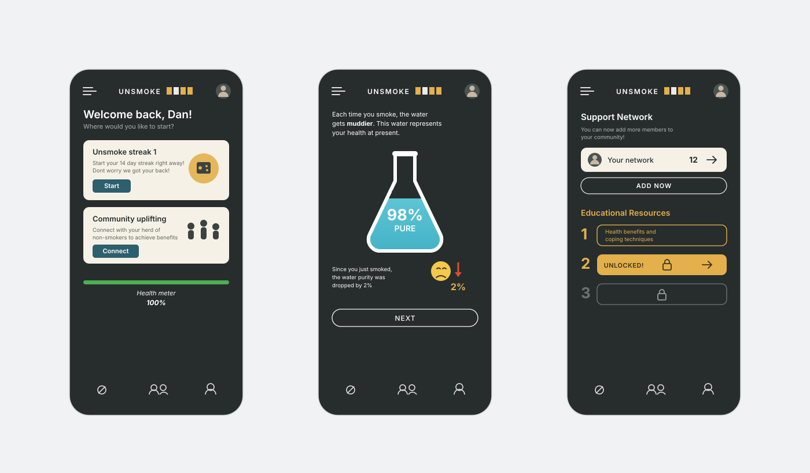

Nirvana · self-directed
A retention system, not a meditation app
The same question asked of a gentler habit. Cue, action, proof, reward, return, and what happens to the loop when the external reinforcement is withdrawn.
Unsmoke · Smoking cessation · Concept, not shipped
A streak has exactly one failure state. You smoke once, the counter goes to zero, and the app now says you have achieved nothing, which is precisely the moment people delete it. Unsmoke records that cigarette as a two per cent change to something continuous instead. The slip still costs you, but it doesn't cost you the product.

READ THIS FIRST. Unsmoke is a self-directed concept. It was never engineered or released, so there is no analytics, no retention curve and no controlled comparison anywhere on this page. The one outcome I can point to, eight people who told me they cut down or stopped, is self-reported by a group I recruited myself. It is an anecdote and I have labelled it as one. What follows is the design argument and the reasoning behind it.
01 Why this problem
Streaks are the default mechanic in habit apps, and for most habits they work. Meditation, running, language practice: you either did the thing or you didn't, and a run of consecutive days is a fair description of how you're doing.
Quitting is not shaped like that. Relapse isn't the exception, it's the documented path, and someone on their fifth attempt has usually made more progress than the counter can express. A streak turns the most fragile moment in the whole process into a total loss, and it does so with a number that is designed to feel like judgement. The person who most needs the app open tomorrow is the person the app just told they are back at day zero.
So the design question I set for myself was narrow: what does the app show you in the sixty seconds after you smoke? Everything else in Unsmoke follows from the answer.
02 The core interaction
Most cravings are not random. They arrive with coffee, after lunch, on the drive home. During onboarding you set the times you already know are difficult, and the app meets you there instead of waiting to be opened.
At the appointed time Unsmoke asks one question: do you feel like smoking right now? Answer no and it logs a clean interval. Answer yes and you get the screen the rest of the product is built around, and the thing it does not do is argue with you.
The copy reads: it is okay if you wish to smoke right now. Then it asks for a moment, and offers a swipe in either direction. Left if you have changed your mind, right if you still want the cigarette. Both are legitimate. Both are one gesture.
“It is okay if you wish to smoke right now. Take a moment, if you change your mind and dont wish to smoke, swipe to the left.”
Interface copy · urge screen
“Each time you smoke, the water gets muddier. This water represents your health at present.”
Interface copy · purity screen
03 The metaphor
The health variable needed a form. A percentage on its own is a number you learn to ignore, and a lung diagram is a medical image people flinch away from. I used a flask of clear water: it starts pure, it clouds when you smoke, and it clears as you go without.
The reason it works as a mechanic rather than as decoration is that water has the right physics built into the reader's head already. Nobody needs to be told that muddy water can be cleared, or that one drop of ink is not the same as a bottle. The metaphor carries the two properties the streak was missing, proportionality and reversibility, without a word of explanation.
04 The rest of the system
The purity variable answers what happens when you slip. It doesn't, on its own, give anyone a reason to open the app on an ordinary Tuesday. Three further pieces carry that load, and each one is deliberately attached to the same underlying record.
ON THE VISUALS. The screens above are redrawn from the original Figma file so they sit inside this site's grid and type. The source designs, including the onboarding and account flows, are on Behance.
05 What actually happened
8+
people reported quitting or cutting down
Self-reported, unverified
5+
years smoking, the group this was designed for
Recruitment criterion
0
users measured in a shipped product
Never built
ANECDOTE, NOT EVIDENCE. Eight people is a small group, I recruited them myself, they knew I had designed the thing, and I took their word for the outcome without verification. There was no control group and no follow-up past a few weeks. I include the number because it is the only outcome this project has, and I would rather show it with the caveats attached than leave a gap where a result should be.
06 Honest limits
Next case study
Nirvana · self-directed
The same question asked of a gentler habit. Cue, action, proof, reward, return, and what happens to the loop when the external reinforcement is withdrawn.
This is the project where I am least sure I got the mechanic right, and the objections to gamifying addiction are good ones. If you have an opinion on it, I would like to hear it.
Or copy it: gokhalesumeet2@gmail.com